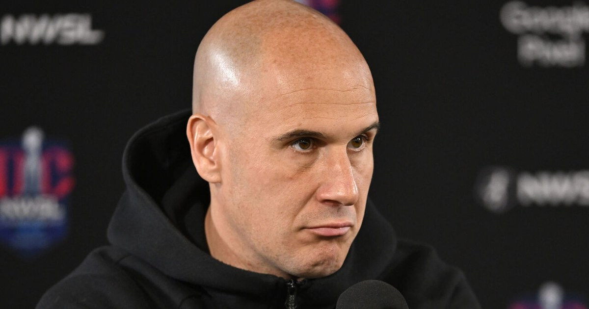

Washington Spirit part ways with Adrián González after a third straight NWSL final loss
Two days after a 2-1 loss to the Kansas City Current in the NWSL Championship — the Spirit's third straight final defeat — Washington parted ways with head coach Adrián González, citing a change in sporting direction.

Disclosure: this post contains affiliate links. I earn a commission on qualifying purchases.
The move
The Washington Spirit and head coach Adrián González mutually agreed to part ways on Monday, the club announced, framing the split as "a change in sporting direction." A comprehensive search for the Spirit's next head coach is underway, and the club has not named an interim replacement.
"We are grateful to Adrián for his leadership and the success he has helped bring to the Spirit over the past three seasons," President of Soccer Operations Haley Carter said in the club's statement. "He has led the team with class and professionalism and made a lasting contribution to this club. As we plan for the Spirit's future, all parties believe a change in leadership is necessary to build on that success and achieve our long-term sporting goals."
The breaking point
Saturday night at Audi Field was supposed to be the payoff. Instead, Vanessa DiBernardo put Kansas City ahead, Debinha doubled the lead in stoppage time, and Trinity Rodman's 98th-minute header only cut the deficit — a 2-1 loss in front of the home crowd, and the third straight year Washington reached the final and left without the trophy.
The pattern is now impossible to miss. Orlando beat the Spirit 1-0 in the 2024 final. Gotham did the same in 2025. Kansas City finished the trilogy on Saturday, winning its first league title while Washington lost a championship game it hosted. Rodman, who finished the season with 15 goals including the playoffs, said afterward that this loss hurt the most.
The record he leaves behind
González joined the Spirit in February 2024 as interim head coach while the club awaited Jonatan Giráldez's arrival from Barcelona, served as an assistant from July 2024 to June 2025, and was promoted to the permanent job in July 2025 when Giráldez left for OL Lyonnes.
The results under him were real, and so was the ceiling. Washington went 39-13-18 across all competitions in his time with the club, finished in the top three of the regular-season standings three years running, and reached three consecutive finals — but never lifted a trophy. The Spirit also lost the Concacaf W Champions Cup final to Club América in May. He earned two NWSL Coach of the Month honors and was a finalist for 2025 Coach of the Year.
This season's run was the closest yet to breaking through. The Spirit finished 17-9-4 and third in the standings, then beat Portland and Utah to reach a final on their own ground — and lost it anyway.
"I'm incredibly proud of what we've accomplished together at the Washington Spirit and grateful to the players, staff, ownership and supporters for their commitment and support throughout my time here," González said in the club's statement. "It has been an honor to lead this group, and I'm especially proud of the resilience and character the team has shown."
What's next
Washington becomes the third NWSL club with a head-coaching vacancy, joining Angel City FC and the Chicago Stars, who both parted with their coaches mid-season.
Whoever takes over inherits a roster built to contend now — a core that has reached three straight finals — and a fan base that has watched the same ending three Novembers in a row. The Spirit's only league title remains the 2021 championship; they have now lost four finals in club history. Getting back to a fourth straight final would be an achievement. Winning one is the job.
Sources
• Washington Spirit Announces Head Coaching Change (Washington Spirit, official)
• Spirit coach Adrian Gonzalez out after 3rd straight title-game loss (Reuters)
• Adrian Gonzalez out as Washington Spirit head coach after NWSL title loss (USA Today)
• Spirit part ways with coach Gonzalez 2 days after losing (theScore)
• Angel City FC Parts Ways With Head Coach Alex Straus (Angel City FC, official)
Gear up: Fanatics